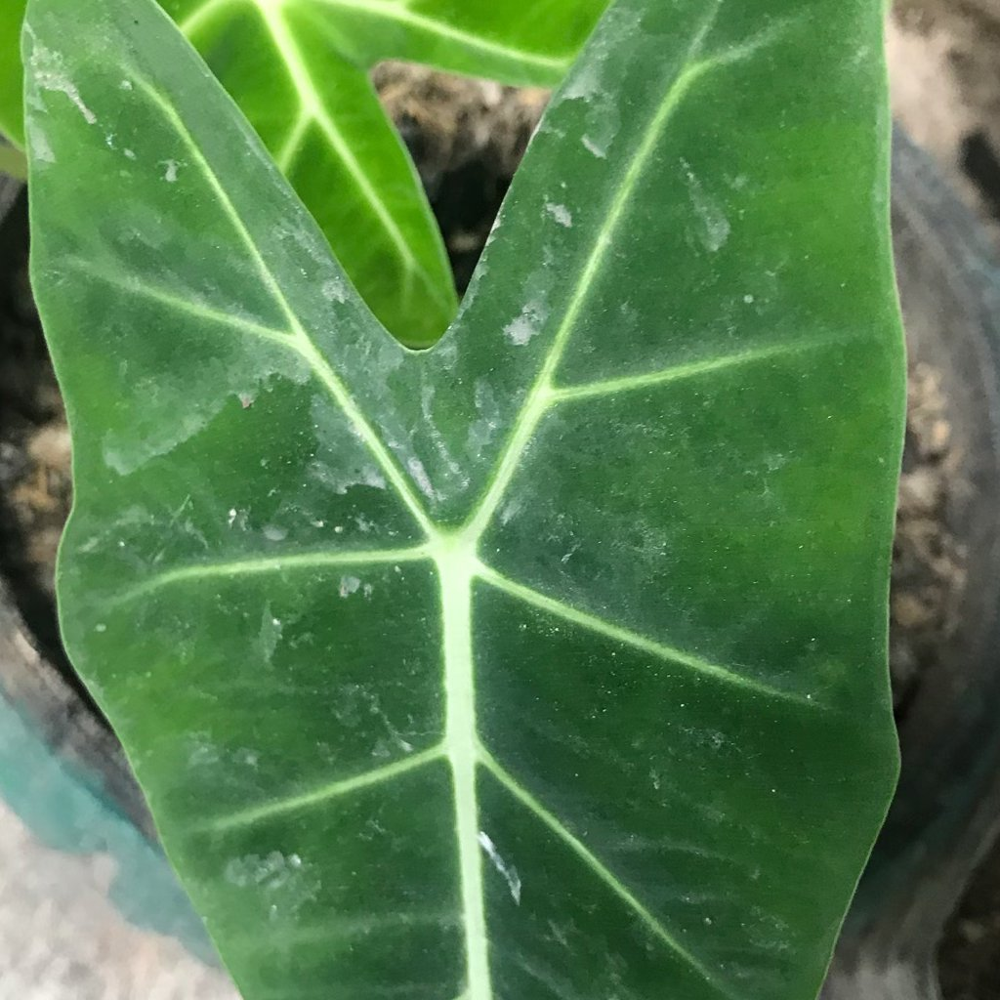
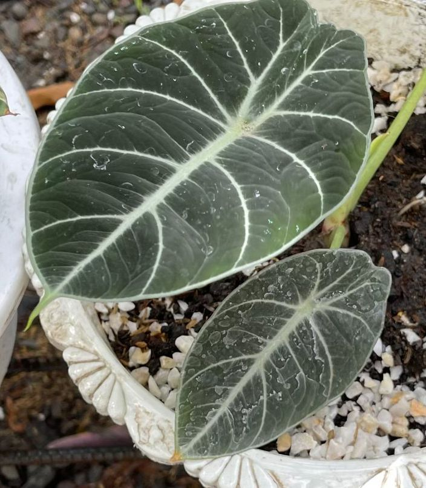

噴霧液殘留
你看到的現象
葉片表面乾後留有白色水漬圈、斑駁或霧面陰影；以手指輕擦或濕布可去除。
是什麼
噴霧或澆水飛濺後，水中礦物、肥料或清潔劑殘留在葉面形成的痕跡。
是否屬於健康問題
通常不是；多影響觀感，不影響功能。
可能原因
- 硬水（高鈣鎂）殘留。
- 肥液或清潔劑濃度偏高、噴灑過量。
- 直射日照下濕葉受熱，留下輕微灼痕。
如何確認
- 濕布或 1:10 白醋水輕拭可去除；新葉生長正常。
- 斑痕不具擴散性。
建議步驟
1) 清潔：以微濕軟布由葉基向葉尖擦拭；必要時用稀釋白醋水處理後再以清水拭淨。
2) 調整：噴霧改在早晨、通風良好處進行；可改用過濾水或靜置軟化水。
3) 避免：噴灑含肥或清潔劑時遠離葉面或降低濃度。
預防小撇步
以擦葉取代噴葉；澆水盡量直接入土，避免葉面長時間潮濕。
圖片

